3 山峦图
3.1 简介
参考 Introduction to ggridges 和 Gallery of ggridges examples
山峦图(ridgeline plot, 也叫作山脊线图)同样是一种对数据分布的可视化方法。ggridges 包主要用来绘制山峦图，同时可以很好地反映数据分布在不同时间、不同空间下的对比情况。ggridges 主要提供两个几何图像函数：
geom_density_ridges(aes(x, y)): 根据几何变换density_ridges，绘制变量x在分组变量 y 上(如果 y 不是分类变量，要手动指定aes(group = y))的核密度曲线，且填充曲线下方面积(此时曲线的高度是统计变换自行计算的核密度估计)
geom_ridgeline(aes(x, y, height))： 绘制变量x在分组变量 y 上的面积图，高度由height指定(统计变换stat = "identity")
这两个几何对象的关系很像geom_bar() 和 geom_bar(stat = "identity")
一些简单的例子：
library(ggridges)
## ridgeline
data <- data.frame(x = 1:5, y = rep(1, 5), height = c(0, 1, 3, 4, 2))
ggplot(data, aes(x, y, height = height)) +
geom_ridgeline() ## y 只有一个水平## density_ridgeline
ggplot(iris, aes(x = Sepal.Length,
y = Species)) +
geom_density_ridges(aes(fill = Species))ggridges 还提供了一个专门用于呈现山脊线图的主题设置 theme_ridges:
ggplot(iris, aes(x = Sepal.Length,
y = Species)) +
geom_density_ridges(aes(fill = Species)) +
theme_ridges() 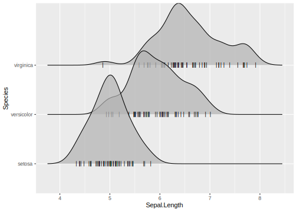
3.2 ridgeline
和 geom_line() 类似，群组对象geom_ridgeline() 默认将所有传递 y 参数的变量作为分组变量(geom_line()将所有传入的离散变量的组合作为分组变量)，如果传入 y 的变量本身不是离散的，那么要手动指定 aes(group = y):
## 以 y 为分组变量的面积图
d <- data.frame(x = rep(1:5, 3), y = c(rep(0, 5), rep(1, 5), rep(3, 5)),
height = c(0, 1, 3, 4, 0, 1, 2, 3, 5, 4, 0, 5, 4, 4, 1))
ggplot(d, aes(x, y, height = height, group = y)) +
geom_ridgeline(fill = "lightblue")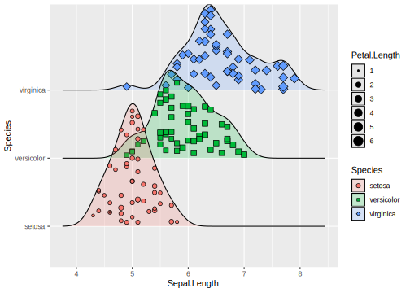
允许 height 中有负数，但同时要在 geom_ridgeline() 中设置 min_height，否则图表在 y 轴的下半部分将不予显示：
data <- data.frame(x = 1:5, y = rep(1, 5), height = c(0, 1, -1, 3, 2))
ggplot(data, aes(x, y, height = height)) +
geom_ridgeline(aes(group = y))
ggplot(data, aes(x, y, height = height)) +
geom_ridgeline(aes(group = y), min_height = -10)在 geom_density_ridges() 中设置 stat = "identity" 并传入 height 参数，效果与 geom_ridgeline() 等同：
3.3 density_ridges()
geom_density_ridges() 计算一定分组下 x 的核密度估计，并绘制面积图，它有一个变体 geom_density_ridges2()，这时面积图是封闭的多边形：
p <- ggplot(iris, aes(Sepal.Length, Species))
p +
geom_density_ridges() +
theme_ridges()
p +
geom_density_ridges2() +
theme_ridges()Figure 3.1: geom_density_ridges2() use enclosed polygons
geom_density_ridges() 和 geom_ridgelines() 在分组变量的处理上等同：
iris_num <- iris %>%
mutate(Species_num = as.numeric(Species))
ggplot(iris_num, aes(Sepal.Length, y = Species_num, group = Species_num)) +
geom_density_ridges()山脊线图的长尾部分可以通过设置 rel_min_height (relative min height) 截断，例如 rel_min_height = 0.01将截断密度估计小于最高点 1% 的全部尾部。一般而言 0.01 这个值已经比较合适了，但是不同的数据集可能还是要自行调整：
ggplot(iris_num, aes(Sepal.Length, y = Species_num, group = Species_num)) +
geom_density_ridges(rel_min_height = 0.01)scale 参数控制不同分组的密度面积图的重叠情况，scale = 1 意味着最高的密度曲线正好触及到第二高密度曲线的基线。scale 越小，分隔越大；scale越大，重叠越多：


Figure 3.2: scale = 0.8 vs. scale = 2
3.4 映射填充色 (Varying fill colors along the x axis)
ggridges 提供了两个函数 geom_ridgeline_gradient() 和 geom_density_ridge_gradient()，它们与对应的 geom_ridgeline 和 geom_density_ridge_gradient() 的工作方式完全相同，但 gradient 版本允许面积图的填充色沿着 x 轴变化。 然而，出于 R 绘图系统的天然限制，在 gradient 版本的山脊线图中不能同时设置透明度。
一个使用 geom_ridgeline_gradient() 的例子：
library(viridis)
d <- data.frame(x = rep(1:5, 3) + c(rep(0, 5), rep(0.3, 5), rep(0.6, 5)),
y = c(rep(0, 5), rep(1, 5), rep(3, 5)),
height = c(0, 1, 3, 4, 0, 1, 2, 3, 5, 4, 0, 5, 4, 4, 1))
ggplot(d, aes(x, y, height = height, group = y, fill = factor(x + y))) +
geom_ridgeline_gradient() +
scale_fill_viridis(discrete = TRUE, direction = -1)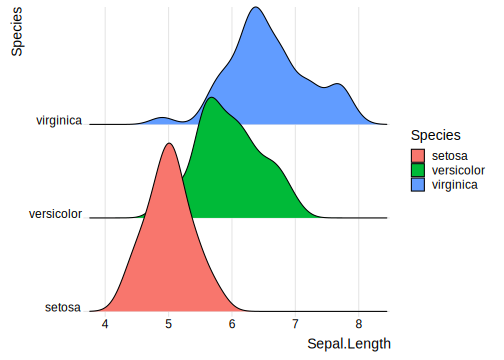
下面是一个用 geom_density_ridges_gradient() 的例子：
fill 上的不是原数据集中的变量 temperature，而是生成变量 ..x..。
因为geom_density_ridges_gradient 的统计变换 stat_density_ridges 在估计密度同时生成了新的 x 轴变量
## # A tibble: 366 x 24
## CST `Max Temperatur~ `Mean Temperatu~ `Min Temperatur~
## <chr> <int> <int> <int>
## 1 2016~ 37 24 11
## 2 2016~ 41 23 5
## 3 2016~ 37 23 8
## 4 2016~ 30 17 4
## 5 2016~ 38 29 19
## 6 2016~ 34 33 32
## 7 2016~ 33 30 27
## 8 2016~ 28 25 22
## 9 2016~ 22 9 -4
## 10 2016~ 31 11 -9
## # ... with 356 more rows, and 20 more variables: `Max Dew Point
## # [F]` <int>, `Mean Dew Point [F]` <int>, `Min Dewpoint [F]` <int>, `Max
## # Humidity` <int>, `Mean Humidity` <int>, `Min Humidity` <int>, `Max Sea
## # Level Pressure [In]` <dbl>, `Mean Sea Level Pressure [In]` <dbl>, `Min
## # Sea Level Pressure [In]` <dbl>, `Max Visibility [Miles]` <int>, `Mean
## # Visibility [Miles]` <int>, `Min Visibility [Miles]` <int>, `Max Wind
## # Speed [MPH]` <int>, `Mean Wind Speed[MPH]` <int>, `Max Gust Speed
## # [MPH]` <int>, `Precipitation [In]` <chr>, CloudCover <int>,
## # Events <chr>, `WindDir [Degrees]` <int>, Month <fct>ggplot(lincoln_weather, aes(x = `Mean Temperature [F]`, y = `Month`, fill = ..x..)) +
geom_density_ridges_gradient(scale = 3, rel_min_height = 0.01) +
scale_fill_viridis(name = "Temp. [F]", option = "C") +
labs(title = 'Temperatures in Lincoln NE in 2016') +
theme_ridges()尽管最常见的做法是把 ..x.. 分组变量 y 、生成变量 ..quantile.. 映射到 fill 上，但这不是全部可能，下面的例子使用 ggridges::Catalan_elections 数据集，它记录了加泰罗尼亚地区 949 个自治市1980 - 2015 年以来在 11 次地区大选中对 Indy 和 Unionist 两党的投票情况：
Catalan_elections %>%
mutate(Year = fct_rev(as.factor(Year))) %>%
ggplot(aes(Percent, Year, fill = Option)) +
geom_density_ridges(alpha = 0.8) +
theme_ridges()## Warning: Removed 6 rows containing non-finite values (stat_density_ridges).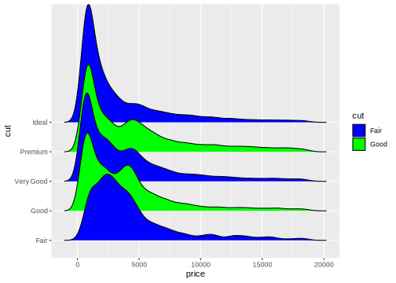
3.5 统计变换
可以把 stat_density_ridges 看作是山脊线图版本的 stat_density，除了自动用生成的密度估计映射到 height 上以外，这个统计变换还提供了一些很有用的特色。
3.5.1 分位数线
(Quantile lines and coloring by quantiles or probabilities)
在 stat_density_ridges() 中设置 quantile_lines = TRUE 可以在图形中添加分位数线：
geom_density_ridges() 中没有本节中很多参数的代码提示，但效果与在统计变换中设置参数相同
可以用 quantiles 参数控制分位数的计算：
## 将密度面积图分为两段，只计算中位数
p +
stat_density_ridges(quantile_lines = TRUE,
quantiles = 2)
## 指定计算两个分位数
p +
stat_density_ridges(quantile_lines = TRUE,
quantiles = c(0.025, 0.975),
alpha = 0.7) 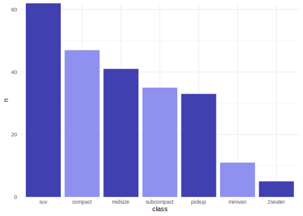
我们同样可以把分位数的生成变量 ..quantile..(设置scale_fill_viridis(discrete = T后，这个生成变量不再是具体的数值，而是标识 x 属于某个分位区间的离散变量) 映射到 fill 属性上，但必须在统计变换stat_density_ridges()中设定 calc_ecdf = TRUE 才能引用这个生成变量：
ggplot(iris, aes(Sepal.Length, Species, fill = ..quantile..)) +
stat_density_ridges(calc_ecdf = T,
geom = "density_ridges_gradient") +
scale_fill_viridis(discrete = TRUE, name = "Quartiles")stat_density_ridges 中设定 geom = "density_ridges_gradient"。该统计变换的几何对象 geom_density_ridges 可不支持沿 x 轴变换填充色。
借用以上的思路，如果我们想强调分布的尾端，可以这样做：
ggplot(iris, aes(Sepal.Length, Species, fill = ..quantile..)) +
stat_density_ridges(calc_ecdf = T,
quantiles = c(0.025, 0.975),
geom = "density_ridges_gradient") +
scale_fill_manual(
values = c("#FF0000A0", "#A0A0A0A0", "#0000FFA0"),
labels = c("(0, 0.025]", "(0.025, 0.975]", "(0.975, 1]"),
name = "Probability"
)calc_ecdf = T 时，还可以引用另外一个生成变量 ..ecdf..，即经验分布函数的值：
ggplot(iris, aes(Sepal.Length, Species, fill = ..ecdf..)) +
stat_density_ridges(calc_ecdf = T, geom = "density_ridges_gradient") +
scale_fill_viridis(name = "Tail Probablity",
direction = -1)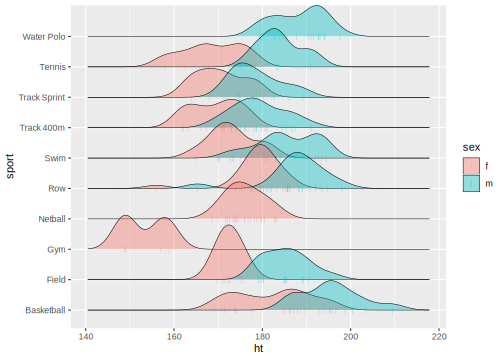
quantile_lines = T 将自动设置 calc_ecdf = T
3.5.2 添加抖动点
stat_density_ridges 同样提供了一个选项，可以直接显示数据点的分布情况，在统计变换或几何对象中设置 jittered_points = TRUE:

位置调整 position = "raincloud" 将抖动点移至面积图下部，类似云雨图的效果：

调整 scale 和 alpha 减小遮盖：
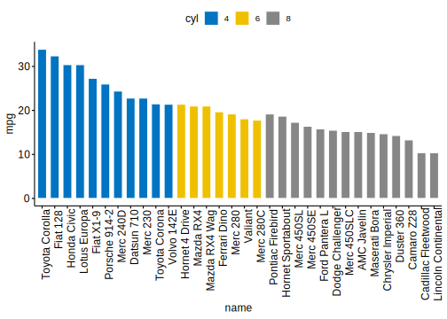
也可以模拟一个地毯图：
p +
geom_density_ridges(
jittered_points = TRUE,
position = position_points_jitter(width = 0.05, height = 0),
point_shape = '|', point_size = 3, point_alpha = 1, alpha = 0.7,
)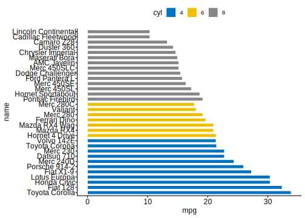
注意上面所用的位置调整是 position_points_jitter(), 若是position_jitter() 则密度图也要被抖动了，而之前使用的position_raincloud本就是针对整体的位置调整。
为了设置这些抖动点的样式，ggridges 提供了一个特殊的标度调整 scale_discrete_manual，我们可以用它为任意离散映射手动设置标度。除此之外，还有很多关于抖动点属性的标度族scale_point_*:
ggplot(iris, aes(x=Sepal.Length, y=Species, fill = Species)) +
geom_density_ridges(
aes(point_color = Species, point_fill = Species, point_shape = Species),
alpha = .2,
point_alpha = 1,
jittered_points = TRUE
) +
scale_point_color_hue(l = 40) +
scale_discrete_manual(aesthetics = "point_shape", values = c(21, 22, 23))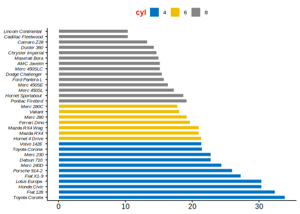
所有在 ggplot2 中点的属性都可以在这里被映射，例如我们将 Petal.Length 映射到点的大小上：
ggplot(iris, aes(Sepal.Length, Species, fill = Species)) +
geom_density_ridges(aes(point_shape = Species,
point_fill = Species,
point_size = Petal.Length),
jittered_points = T,
alpha = 0.2,
point_alpha = 1) +
scale_point_color_hue(l = 40) +
scale_point_size_continuous(range = c(0.5, 4)) +
scale_discrete_manual(aesthetics = "point_shape", values = c(21, 22, 23))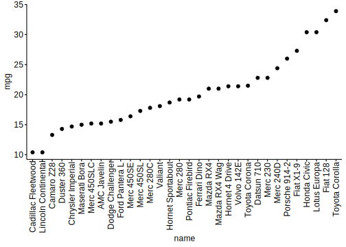
类似的，可以用 vline_* 开头的属性族控制分位数线的形态,可以把山峦图、抖动点和分位数线同时呈现，例如：
ggplot(iris, aes(x = Sepal.Length, y = Species)) +
geom_density_ridges(
jittered_points = TRUE, quantile_lines = TRUE,
scale = 0.9, alpha = 0.7,
vline_size = 1, vline_color = "blue",
point_size = 0.4, point_alpha = 1,
position = position_raincloud(adjust_vlines = T)) ## 否则分位数线在原位置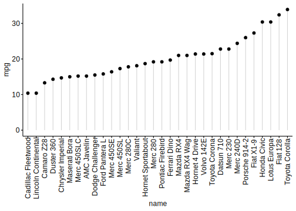
3.5.3 其他统计变换
我们可以在 geom_density_ridges 中设置其他的统计变换，例如 stat_density，它和 stat_density_ridges 在具体的密度估计算法上有一些差别 :
Figure 3.3: stat_density vs. stat_density_ridges
stat_density_ridges estimates the data range and bandwidth for the density estimation from the entire data at once, rather than from each individual group of data.
如果相对于密度曲线更偏爱直方图，可以用统计变换 stat = "binline"，一般而言对于直方图都会设置(scale < 1)，同时可设置 draw_baseline = F 取消直方图两端的水平线(rel_min_height 对于直方图效果不好)：
p +
geom_density_ridges(aes(fill = Species),
stat = "binline",
draw_baseline = F,
scale = 0.8,
alpha = 0.4)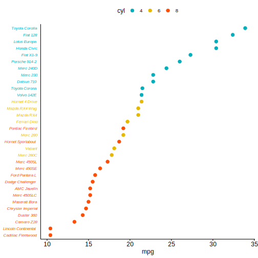
3.6 主题
在简介中，介绍过 ggridges 为山脊线图专门设计的主题 theme_ridges, 不妨查看一下它的代码：
##
## theme_ridges <- function(font_size = 14, font_family = "", line_size = .5, grid = TRUE, center_axis_labels = FALSE) {
## half_line <- font_size / 2
## small_rel <- 0.857
## small_size <- small_rel * font_size
## color <- "grey90"
##
## if (grid) {
## panel.grid.major <- element_line(colour = color, size = line_size)
## axis.ticks <- element_line(colour = color, size = line_size)
## axis.ticks.y <- axis.ticks
## }
## else {
## panel.grid.major <- element_blank()
## axis.ticks <- element_line(colour = "black", size = line_size)
## axis.ticks.y <- element_blank()
## }
##
## if (center_axis_labels) {
## axis_just <- 0.5
## }
## else {
## axis_just <- 1.0
## }简单来说，theme_ridges() 取消了大部分网格线(只要用户没有提前设置grid())，并修改了刻度线的样式，取消了 y 轴上的刻度线
p +
geom_density_ridges(aes(fill = Species))
p +
geom_density_ridges(aes(fill = Species)) +
theme_ridges()
Figure 3.4: default theme vs. theme_ridges()
在添加theme_ridges()的基础上，还可以进一步设置标度中的expand，使图形更加紧凑：
p +
geom_density_ridges(aes(fill = Species)) +
theme_ridges() +
scale_x_continuous(expand = c(0.01, 0)) +
scale_y_discrete(expand = c(0.01, 0))用 bbplot::bbc_style() 做主题，似乎效果也不错：
windowsFonts(Helvetica = "TT Arial")
p +
geom_density_ridges(aes(fill = Species)) +
bbplot::bbc_style()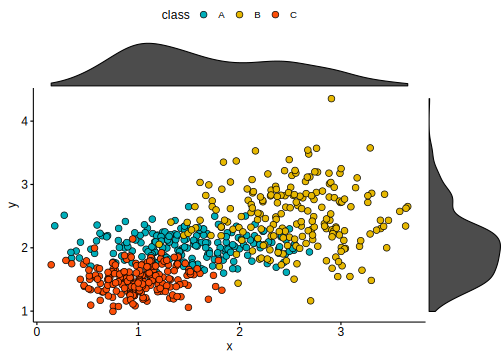
3.7 循环标度
经验上，当密度面积图的填充色有一定的交替规律时，山脊线图最能吸引人，出于此，ggridges 提供了循环标度 (cyclical scales)。这些标度可以循环使用提供给它们的属性值，例如 scale_fill_cyclical(values = c("blue", "green")) 将交替使用蓝色和绿色作为填充色：
ggplot(diamonds, aes(price, cut, fill = cut)) +
geom_density_ridges(scale = 4) +
scale_fill_cyclical(values = c("blue", "green"))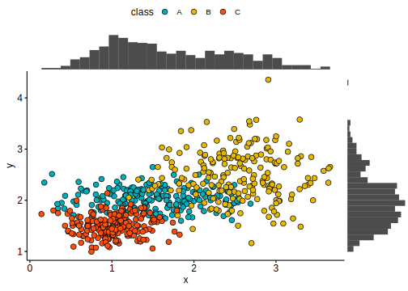
默认情况下，循环标度不显示图例，guide = legend 可以改变这一点，但这种图例往往具有误导性：
## 循环标度的图例
ggplot(diamonds, aes(price, cut, fill = cut)) +
geom_density_ridges(scale = 4) +
scale_fill_cyclical(values = c("blue", "green"),
guide = "legend")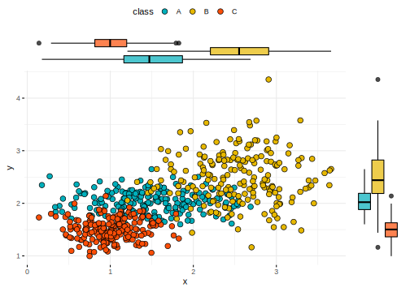
普通标度中中修饰图例的方法在循环标度中依然适用：
ggplot(diamonds, aes(price, cut, fill = cut)) +
geom_density_ridges(scale = 4) +
scale_fill_cyclical(
values = c("blue", "green"), guide = "legend",
labels = c("Fair" = "blue", "Good" = "green"),
name = "Fill colors"
)可以为多个属性设置循环标度，它们的图例会自行合并：
ggplot(diamonds, aes(price, cut,
fill = cut, color = cut)) +
geom_density_ridges(scale = 4, size = 1) +
scale_fill_cyclical(
values = c("blue", "green"), guide = "legend",
labels = c("Fair" = "blue w/ black outline",
"Good" = "green w/ yellow outline"),
name = "Color scheme"
) +
scale_color_cyclical(
values = c("black", "yellow"), guide = "legend",
labels = c("Fair" = "blue w/ black outline",
"Good" = "green w/ yellow outline"),
name = "Color scheme"
)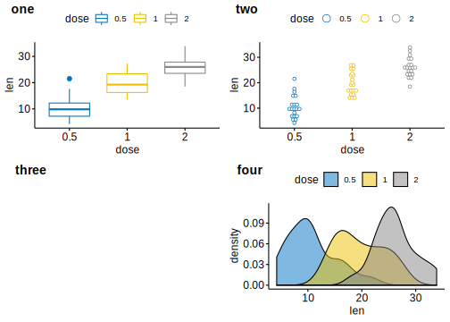
循环标度同样可以运用到 ggridges 以外的图形中：
mpg %>% group_by(class) %>% tally() %>% arrange(desc(n)) %>%
mutate(class = factor(class, levels = class)) %>%
ggplot(aes(class, n, fill = class)) +
geom_col() +
scale_fill_cyclical(values = c("#4040B0", "#9090F0")) +
scale_y_continuous(expand = c(0, 0)) +
theme_minimal()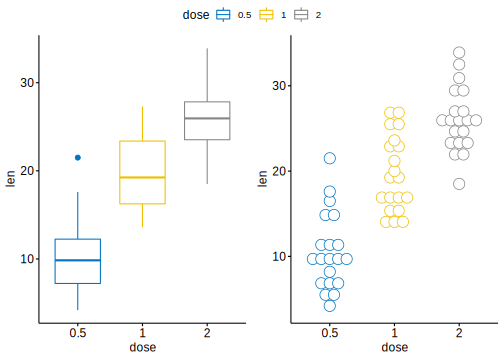